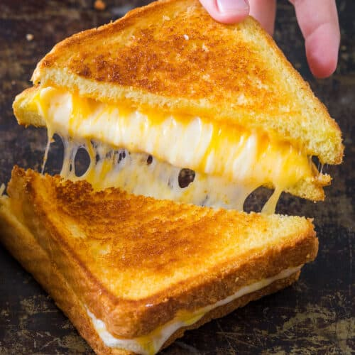

Grilled Cheese

Description
A grilled cheese sandwhich.
Ingredients
- Bread
- Cheese Block
- Butter
- Optional Lunchmeat
Steps
- Grab flat skillet.
- Place skillet on burner and set burner to medium low.
- Layer one side of bread with butter, and place it onto skillet butter side down.
- Add cheese and lunch meat to bread.
- Layer another piece of bread with butter, place this on top of the sandwhich butter side up.
- Wait 30 seconds to a minute flip sandwhich.
- Wait another 30 seconds to a minute.
- If toastier bread is desired flip over once more repeating process with other side.
- If sandwhich is as desired remove from skillet.
- Serve